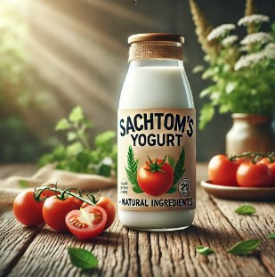

Conoce el yogurt de Sacha Tomate, un producto único que combina el sabor exótico y los beneficios nutricionales.
1.6g
11.9g
6g
Incluye vitaminas A, C, E y potasio
Nuestro yogurt está hecho con:
Ideal para:
Descubre cómo nuestro yogurt de Sacha Tomate se compara con otros productos en el mercado:
| Producto | Calorías | Proteína | Carbohidratos | Fibra | Grasas |
|---|---|---|---|---|---|
| Sachtom's Yogurt de Sacha Tomate | 60 kcal | 1.6g | 11.9g | 6g | 0.2g |
| Yogurt de frutas tradicional | 120 kcal | 5g | 18g | 1g | 3.5g |
| Yogurt griego natural | 90 kcal | 10g | 6g | 0g | 5g |
Introduce la cantidad de porciones que deseas consumir para calcular el total de calorías: